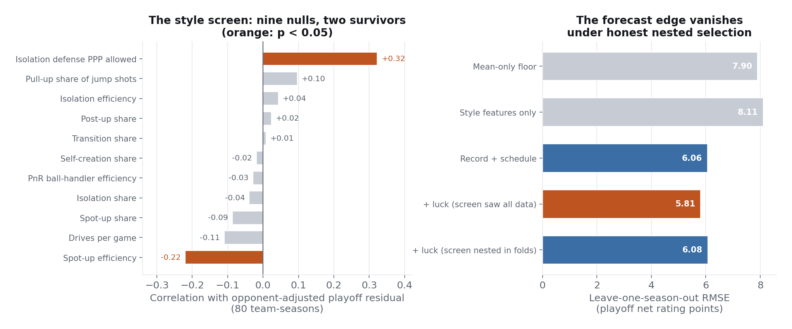

What Survives the Playoffs
Every spring a front office asks whether its roster is built for the playoffs. The folk theory says transition-reliant teams collapse and self-creating teams hold up. This analysis turns the theory into a testable model and the theory fails its test, while the two features that do survive turn out to be measuring something more useful than style: which records are lying.
Is this roster built for the playoffs?
Style will not tell you, in five seasons of evidence. Across 80 playoff team-seasons with opponent strength controlled, no offensive style feature predicts playoff over- or underperformance: transition reliance, the trait playoff defenses supposedly punish, is the deadest feature on the board at r = +0.008. The premise of the folk theory is real, isolation rises and every play type gets harder, but its conclusion does not follow.
Eighty playoff team-seasons, each carrying its regular season style profile from play-type and tracking tables and an opponent-strength control computed from game logs, because the average playoff opponent ranges from a -0.5 net rating slate to +12.7 and ignoring that difference measures the bracket instead of the team. Eleven style features are screened against opponent-adjusted overperformance with permutation p-values and a Bonferroni bar, the two survivors face per-season stability checks, a mechanism test with its prediction stated in advance, and a franchise cluster bootstrap, and every predictive claim runs through leave-one-season-out validation with feature selection nested inside each fold.
The two survivors are not style knobs. Spot-up shooting efficiency is negative, teams that shot well underperform, and isolation defense allowed is positive, teams that defended badly overperform, a sign no basketball mechanism predicts. Both behave as regression to the mean on noisy shooting components predicts: hot spot-up shooting inflates a record the playoffs regress away, and opponents making tough shots deflates a record that was better than it looked. The pattern is consistent with a luck-detection reading, and the correlational finding survives the Bonferroni correction, all five seasons, and the franchise bootstrap.
With the feature screen allowed to see all 80 rows, adding the two luck features improved out-of-sample error 4 percent. With the screen moved inside each validation fold, so selection never sees the season being predicted, the improvement vanishes: 6.07 against the baseline's 6.06. Nested-tuned ridge and gradient boosting agree, with the boosting tuner selecting the most conservative configuration available in eight of ten fits. The correlational claim stands; the forecasting claim falls; both halves are findings, and the deployed table labels its coefficients as descriptions of the sample rather than a forecasting tool.

The sample's largest opponent-adjusted over- and underperformances, straight from the deployed table. The 2024-25 Heat row is the cautionary example in one line: a raw collapse of -33.5 came against the hardest schedule in the sample, and nearly half of it is the bracket rather than the team.
| Team | Season | RS net | Playoff net | Opp strength | Adjusted |
|---|---|---|---|---|---|
| New York Knicks | 2025-26 | +6.4 | +15.4 | +3.7 | +13.3 |
| Miami Heat | 2022-23 | -0.5 | +1.9 | +4.2 | +11.1 |
| New Orleans Pelicans | 2021-22 | -0.8 | -2.2 | +7.5 | +10.6 |
| Miami Heat | 2024-25 | +0.4 | -33.5 | +9.2 | -20.9 |
| New Orleans Pelicans | 2023-24 | +4.6 | -16.2 | +7.3 | -12.0 |
| Atlanta Hawks | 2025-26 | +2.2 | -18.1 | +6.4 | -11.0 |
All 80 playoff runs are sortable in the team tables.
Sort every playoff run
All 80 playoff team-seasons with opponent strength and the opponent-adjusted residual, the number that separates a hard bracket from a real underperformance. Default sort is the adjusted residual.
For a front office in March, the supported use is diagnosis rather than forecasting. The two surviving features indicate which regular season records overstate their teams, nothing at the style level predicted translation, and at this sample size the best available playoff forecast remains the record and the schedule. Both halves of that sentence are findings, and the analysis demonstrates each directly.
The review caught an interpretation error in the baseline: a slope of 1.56 had been described as the playoffs amplifying quality gaps. Decomposed, the slope is exactly the correlation times the ratio of standard deviations, 0.574 times 2.72, driven by noisier playoff outcomes and range restriction among qualifiers (the qualifier pool's spread is 2.92 against the league's 5.31). A compounding mechanism may exist, but nothing in the fit identifies it, and the analysis now says so. Permutation p-values also moved to the finite-sample estimator.
Eighty observations is small and playoff outcomes are inherently noisy: injuries, matchup specifics, and single-possession swings move a seven-game series by points no season-level model can see. The luck interpretation is a mechanism argument consistent with the checks performed, not a proven causal claim; the direct test needs shot-level data this database does not hold. Opponent strength uses full-season net rating and ignores April form.
Technical deep dive
Technical highlights
- The opponent-strength control is itself stress-tested for endogeneity: it barely tracks advancement, and a fully exogenous first-round-only variant shows a stronger relationship, making the adopted control the conservative choice.
- The mechanism check states its prediction before looking: if the survivors are luck detectors, hot spot-up shooting should correlate positively with regular season net rating and unlucky isolation defense negatively. Both land as predicted.
- Feature selection nested inside every validation fold, the discipline that separated the correlational finding from the forecasting mirage.
- Challenger models get nested hyperparameter tuning on identical folds, so the linear model's survival is a fair result rather than a handicapped comparison.
Key decisions
- Why leave-one-season-out instead of a random split?
- Playoff teams within one season share a bracket. A random split lets the model peek at the season it is graded on; holding out whole seasons matches the position a front office is actually in each April.
- Why ship a model whose forecast adds nothing?
- Because the shipped table says so on its face: coefficients labeled as in-sample descriptions, with the honest error estimate quoted beside them. The luck features tell a front office which records to distrust, not what will happen.
Technology stack
Built on five seasons (2021-22 through 2025-26) of NBA Stats dashboard data compiled into a local SQLite database of 97 tables. All six research analyses run against the same database. Every number quoted is generated by the notebook's own executed code, deterministically seeded, and re-verified from a clean environment. Notebooks available by email.